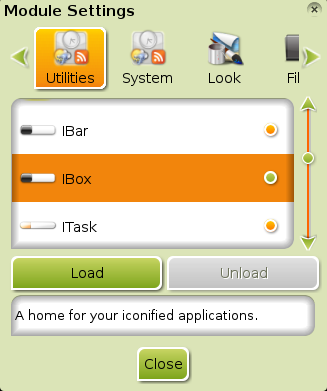

[kliknite na bilo koju sliku za uvećanje]
Ova stranica objašnjava, malo detaljnije, šta su Enlightenment (E17) Moduli , kako su povezani sa Gedžetima, kako uključiti instalirane Module, i kako instalirati Module iz Bodhi Linux repozitorija.
Šta je Modul?
Modul je mali E17 program koji se može koristiti za proširenje funkcionalnosti vaše radne površine. Oni mogu biti instalirani na PC i učitani u RAM na početku. Pošto ne učitava sve svoje Module po standardu(default), E17 minimalizuje iznos RAM-a koji se koristi u svakom trenutku. Što više Modula učitate/uključite, to će se više RAM-a koristiti. Na PC-ima sa 256MB RAM-a ili manje, to malo postaje briga. Ali, zbog efikasnosti Enlightenment Osnovnih Biblioteka (EFL) (Enlightenment Foundation Libraries (EFL)), svaki Modul koristi vrlo malo dodatne memorije. Programi (programi za rad sa tekstom, internet pregledači, itd) koje izaberete za rad, su mnogo važniji aspekt za razmatranje zbog ograničenja sa RAM-om. Mnogi Moduli, jednom učitani u RAM, obezbeđuju pristup Gedžetima koji se mogu postaviti na radnu površinu ili na Policu(Shelf).

{kind=link}
Kako uključiti/učitati Module
Idite na Menu>Settings>Modules i dijalog Podešavanja Modula (Module Settings) prikazan desno, se pojavljuje.
Obratite pažnju na trake(tabs) na vrhu. Moduli su kategorizovani kao Korisni Programi (Utilities), Sistem (System), Izgled (Look) i tako dalje. U ovom snimku ekrana, iBar modul ima narandžasti indikator (kružić) kojim je označen. (indikator se menja u zavisnosti od Teme), što znači da je on već učitan. Postoji i mali opis šta istaknut (highlighted) Modul radi, na dnu prozora Podešavanja Modula (Modules Settings). Imate opciju da ga isključite da bi uštedeli malo memorije koju koristi. Sledeći Modul na listi, iBox, nije učitan. Ako kliknete na liniju gde se nalazi iBox , the Load dugme će postati atkivno, kao što je prikazano na slici. Klizač na desnoj strani vam omogućava da klizite na dole da bi videli ostale Module koje ste instalirali i koji je njihov status - ili su učitani u RAM ili nisu učitani.
Moduli i Gedžeti
Mnogi Moduli obezbeđuju Gedžete koji se mogu dodati na vašu radnu površinu ili na Policu. Neki, kao Informacije o Operacijama EFM-a (EFM Operation Info), mogu biti prikazani samo na radnoj površini, dok drugi kao Sistem Podmetač (Systray) mogu biti prikazani samo na Polici (Shelf). Postoji nekoliko Modula čija je jedina funkcija da obezbede Gedžete, kao što je Sat (Clock) modul. U većini slučajeva, Gedžet neće biti prikazan samo ako je učitan njegov odnosni Modul, zato što vam E17 dopušta da odlučite gde da postavite Gedžete, bilo da je to radna površina ili polica. Molimo pogledajte stranicu Police i Gedžeti (Shelves and Gadgets) za detaljnija obaveštenja oko postavljanja Gedžeta na jednu ili drugu lokaciju.
Instalirani Moduli
Molimo pogledajte stranicu Reference o Modulima (Module Reference) gde se nalazi lista svih Modula koji su instalirani po standardu (by default).
Preuzimanje Modula
Mnogi Moduli, kao što je Prognoza Vremena (Forecasts),
nije uključen u instalacioni CD Bodhi Linux-a da bi bio u granicama minimalnog, u skladu sa
Bodhi Linux filozofijom. Moduli koji nisu instalirani po standardu (by default) se mogu naći u Bodhi Linux
repozitoriju. Možete ih instalirati preko Synaptic Menadžera Paketa (Synaptic Package Manager) na
Main Menu>Applications>Preferences ili sa apt-get komandno-linijskim alatom:
sudo apt-get install -y <name-of-module>
Pored Prognoza Vremena (Forecasts), pogledajte i sledeće korisne Enlightenment Module koji nisu instalirani po standardu (by default):
- procesor (cpu)
- prognoza vremena (forecasts)
- pošta (mail)
- memorija (mem)
- vesti (news)
- mreža (net)
- tsat (tclock)
Potražite "enlightenment module" u polju za Brzo Pretraživanje (Quick Search) Synaptic-a da nađete i druge.
Za kompletnu listu dostupnih Modula pogledajte Reference o Modulima (Module Reference).
Uklanjanje Modula
Zbog prirode Modula, nije neophodno da ih obrišete/uklonite (uninstall). Dok god nisu uključeni, oni uopšte neće koristiti sistemske resurse (RAM & CPU na primer). Plus, prostor na disku koji zauzimaju je vrlo mali.
Ali, ako dođete u situaciju da morate kompletno da uklonite jedan (ili više) Modula, jednostavno ih uklonite (uninstall) iz Synaptic Menadžera Paketa (Synaptic Package Manager) kao bilo koji drugi program, ili pokrenite sledeću komandu u terminalu:
sudo apt-get remove -y <name-of-module>